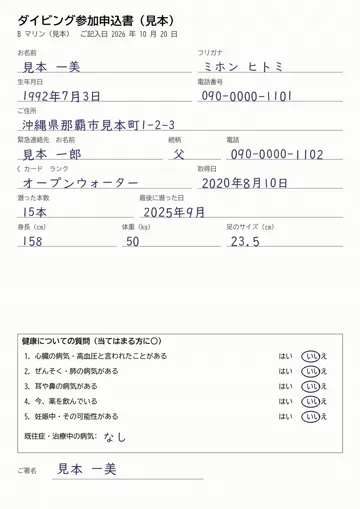
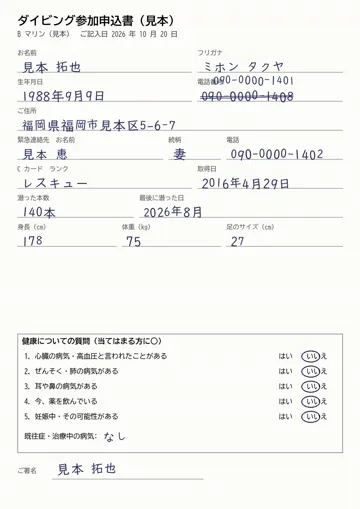
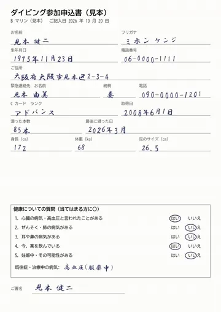
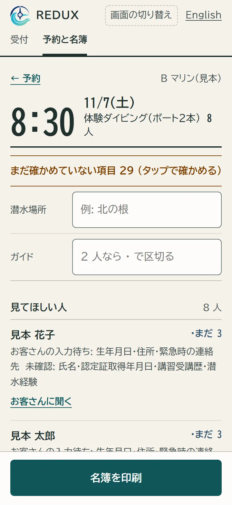
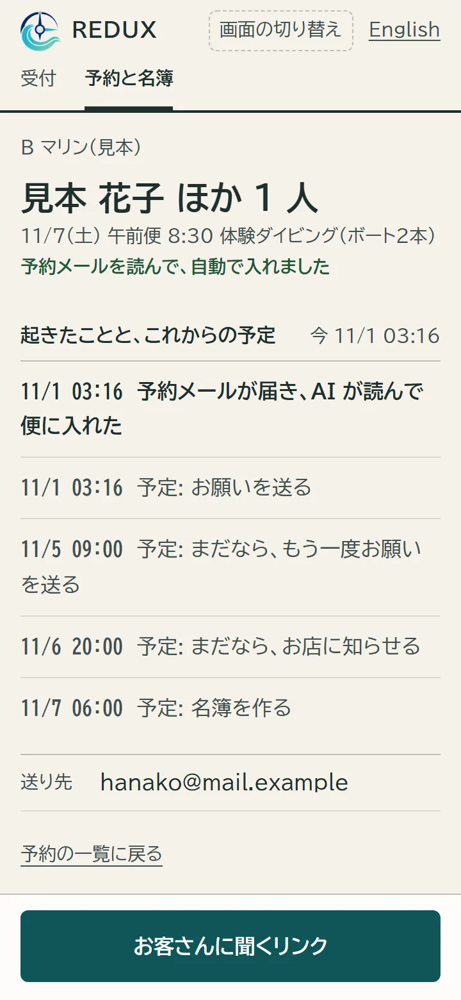
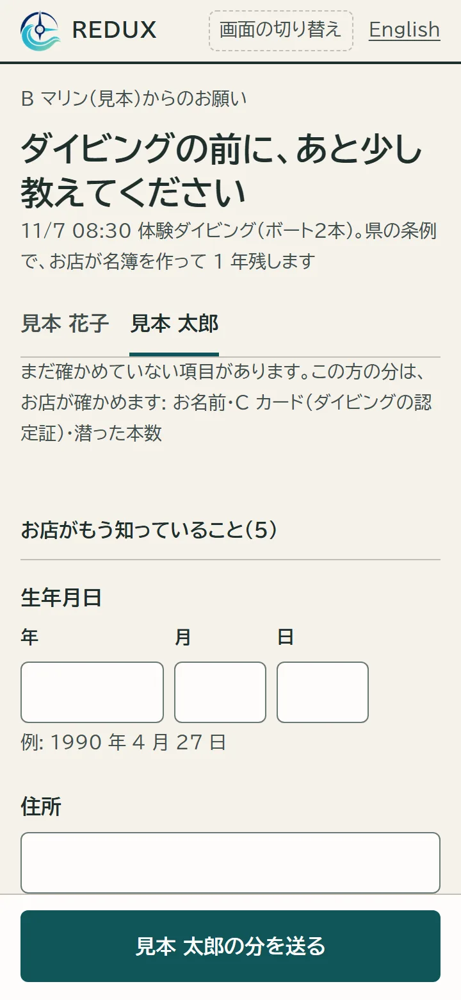
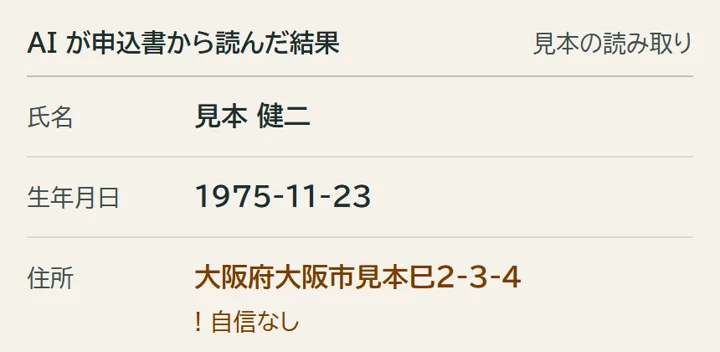
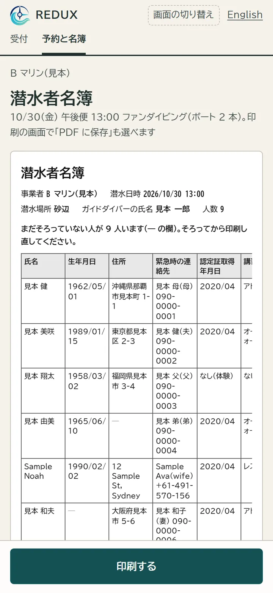
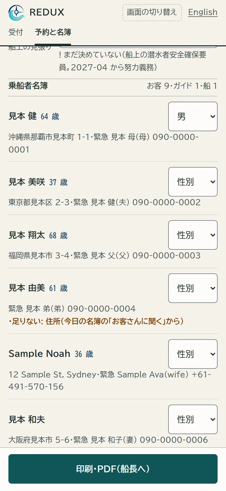
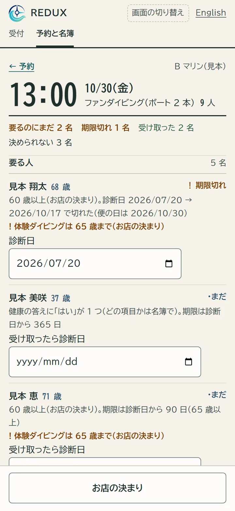

沖縄のダイビングショップ向け
紙とメールの束から、
AI が名簿をつくる。
予約メールと紙の申込書を AI が読み、条例の 13 項目の名簿に入れます。お店がするのは、印の付いた所を確かめることです。
送るのは、お店の名前と予約メールが届くアドレスだけ。宛先は trial@reduxdive.com
試用は 0 円・1 か月・先着 3 店




13項目
条例の 13 項目の名簿
名前・住所などは AI、潜水場所とガイドはお店、健康はお客さんが入れる（施行規則 第 30 条）
10秒ほど
1 件を AI が読む時間
予約メール・C カード・申込書の見本 16 件で 4〜10 秒。読めない所には印が付く
0円
試用は 1 か月、無料
先着 3 店まで。お店が見るのは、印の付いた所だけ
こんな朝を、終わりにします
1毎朝、申込書を名簿に書き写している
予約サイトのメールと紙の申込書から、条例の名簿へ手で写す。
→ AI が読んで、名簿に入れます
2足りない項目を、当日の朝に聞き直している
住所や生年月日が抜けた人に、港で聞き直す。
→ 足りない人にだけ、お願いのメールが届きます
3乗船者名簿を、また一から書いている
同じ人の名前と住所を、船の書類にもう一度。
→ 同じ名簿から出ます
1予約メールを転送する
お店に届く予約メールを、REDUX のアドレスへ転送する設定をします。届いたメールは AI が読み、名簿の行に入れます。

2足りない所だけ、お客さんに聞く
住所や生年月日が足りない人には、REDUX からお願いのメールが届きます。健康の質問は、お客さん本人が答えます。

3自信のない所は、お店が確かめる
AI が読み取りに自信のない所には印が付きます。お店が見て直してから、名簿に入ります。

4朝、条例の名簿を印刷する
13 項目の名簿を、印刷か CSV で出せます。直した所は記録に残ります。

5船の書類も、同じ名簿から
乗船者名簿とダイビング計画、診断書が要る人の一覧が、名簿から出ます。同じ名簿から出るので、もう一度書く必要はありません。


30 秒で見る
試用の条件
- 料金
- 試用のあいだは 0 円。黙って料金が始まることはありません
- 期間
- 1 か月。続けるかは、そのあとに決めてもらいます
- 枠
- 先着 3 店。埋まったら、このページに受付終了と出します
- 申し込み
- メールを 1 通。お店の名前と、予約メールが届くアドレスを書いてください。いただいたお店の名前とアドレスは、試用の案内と転送の設定の連絡にだけ使います
- やめるとき
- 名簿を CSV でお渡しし、30 日以内に、こちらの控えも含めて消します
よく聞かれること
始めるのに、どれくらい手間がかかりますか
予約メールの転送の設定だけです。手順はこちらから送ります。約 10 分です。
お客さんの健康の答えは、AI に送られますか
送りません。健康の答えは名簿に保存しますが、AI には送りません。申込書の写真も、健康の欄を塗ってから送ります。
名簿は誰が見られますか
名簿の画面を開けるのは、お店の人だけです。不具合を直すときに、運営者が中身に触れることがあります。
AI が読み間違えたら、どうなりますか
自信のない所には印が付き、お店が確かめるまで名簿の値として扱いません。直した所は記録に残ります。
どの AI を使っていますか
米国 Anthropic の AI です。送るのは予約メールの文と申込書の写真で、健康の部分は外してから送ります。